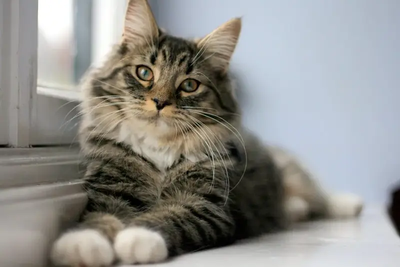
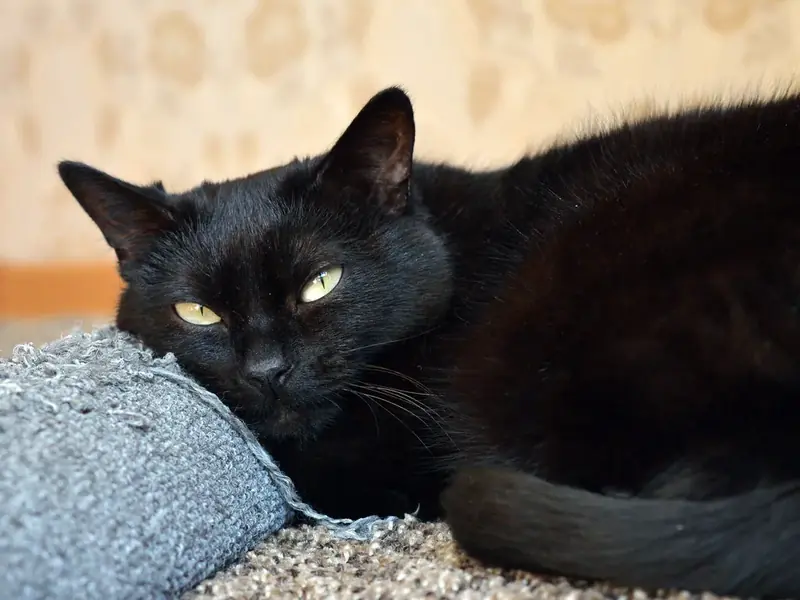
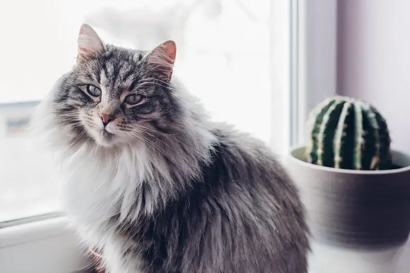

Workshop drawing, to scale with the other drawings on this site.

Window perch
A$89
The window perch is a platform of 18 mm hoop pine ply, 56 cm wide and 30 cm deep, with a raised lip along the front edge. It does not hang off the glass or the sill. Two steel brackets screw to the wall beneath the window, and the platform sits with its top a few centimetres under the sill so a cat lying on it is level with the view.
- Platform
- 56 cm wide, 30 cm deep, 18 mm ply with a 2 cm front lip
- Pad
- 20 mm firm foam, cut to fit inside the lip
- Covers
- Two cotton canvas covers, envelope back, one teal and one oatmeal
- Brackets
- Two steel angles fitted in the workshop, 36 cm apart
- In the box
- Four timber screws, four wall plugs, drilling template
The covers are the part that does the hard yards. Canvas was chosen over fleece because fur brushes off it and it does not pill. Slip the cover off, shake it outside, cold machine wash and hang it on the line; the second cover goes on the pad meanwhile.
Measure from the floor to the underside of your sill before ordering. The brackets need about 20 cm of flat wall below the sill, clear of skirting heaters and power points.
Workshop drawing, to scale with the other drawings on this site.

Sisal scratching post
A$75
Most freestanding posts tip when a grown cat leans into them. This one is tied to the wall. An 80 cm post, 9 cm across, stands on a 30 cm square plywood foot and carries a small steel bracket at the top that takes two screws into the wall. The foot spreads the push at the bottom; the bracket stops the rock at the top.
- Height
- 80 cm from floor to cap
- Post
- 9 cm across, wrapped full height in 6 mm sisal rope
- Foot
- 30 cm square, 18 mm hoop pine ply, felt dots underneath
- Top
- Plywood cap with a steel wall bracket
- In the box
- Two timber screws, two wall plugs, four spare staples
The rope is wound dry and tight, each turn hard against the last, and stapled only at the two ends where claws do not reach. Stand the post beside the lowest shelf of a route and it doubles as the first step up: the planner can add one to any layout with a single tick.
The foot sits flat on timber, tile or low carpet. On deep-pile carpet, press it down firmly before marking the bracket holes so the post is upright once the pile settles.
Workshop drawing, to scale with the other drawings on this site.
Replacement sisal wrap
A$22
Sisal is the one part of a cat wall that is supposed to be destroyed. When a post has gone from rope to fringe, there is no need to replace the timber. A replacement wrap is a 25 m coil of the same 6 mm three-strand sisal, which covers one 80 cm post from foot to cap with a little left over.
- Length
- 25 m coil
- Rope
- 6 mm three-strand sisal, untreated
- Also in the bag
- Twelve staples and a printed re-wrapping sheet
Re-wrapping takes about half an hour. Pull the old staples with pliers, unwind the worn rope, staple the new end at the foot and wind upwards, pushing every turn down hard with your thumb. Staple off under the cap and trim.
And the covers? Every window perch is sent with two covers, so a spare is already in your cupboard from day one. The foam pad is a plain rectangle, so if both covers are ever past it, any cushion cover cut for a 56 cm by 28 cm pad will fit.
Looking after the pieces
Covers, rope and timber, month to month
None of this is fussy, but a little attention keeps a wall looking like furniture instead of a pet shop corner.
- Covers: shake weekly, wash when they need it. Cold water and the clothesline; a hot dryer shrinks canvas.
- Sisal: trim loose strands with scissors as they appear. When bare timber shows through, order a wrap.
- Timber: wipe with a barely damp cloth. Once a year, rub a teaspoon of furniture oil into the tops and buff it off.
- Screws: every few months, put a screwdriver on each bracket and take up any slack. Timber moves with the seasons and walls differ.
We sell furniture and we stick to that; these notes are about timber, canvas and rope, nothing more.

Windowsills are prime territory; a perch makes one wider.
| Piece | What it is | Price |
|---|---|---|
| Wall step shelf | 40 cm × 25 cm, 18 mm hoop pine ply, two brackets | A$59 |
| Wall bridge, 90 cm | Nine pine planks on sisal rope, a ledge at each end | A$129 |
| Window perch | 56 cm × 30 cm platform, two washable canvas covers | A$89 |
| Sisal scratching post | 80 cm tall, floor foot and a wall bracket up top | A$75 |
| Replacement sisal wrap | 25 m of 6 mm sisal rope, enough to re-wrap one post | A$22 |
Order cat furnitureNext: plan the whole wall